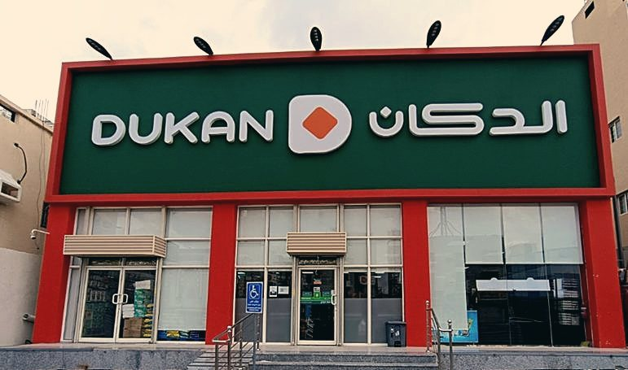
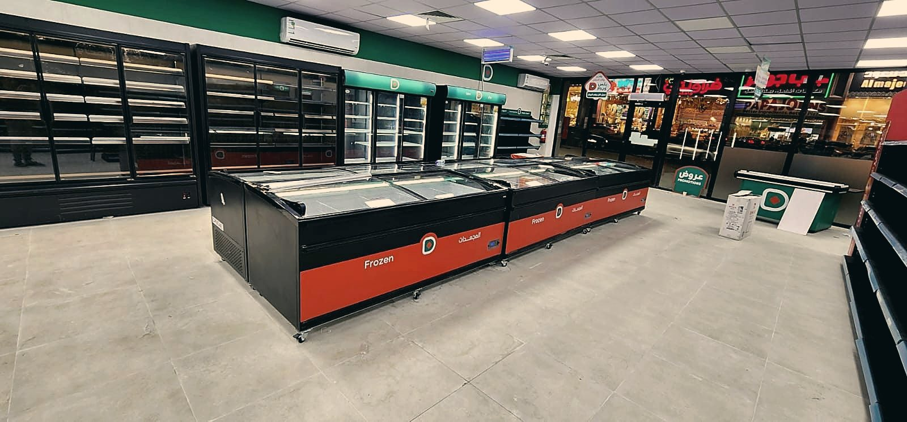
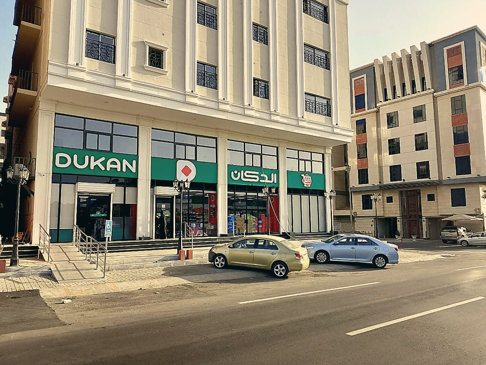
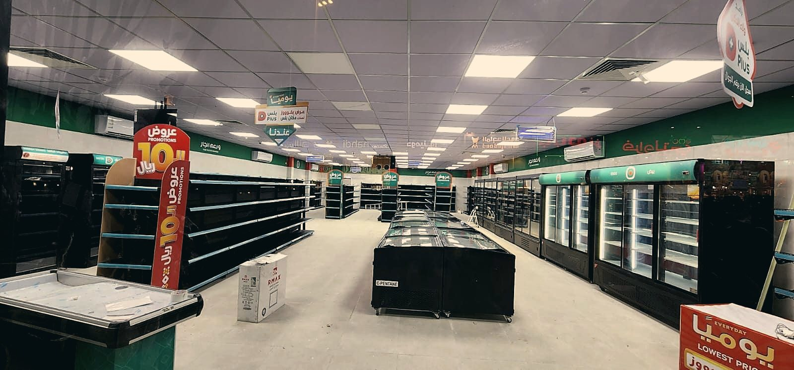
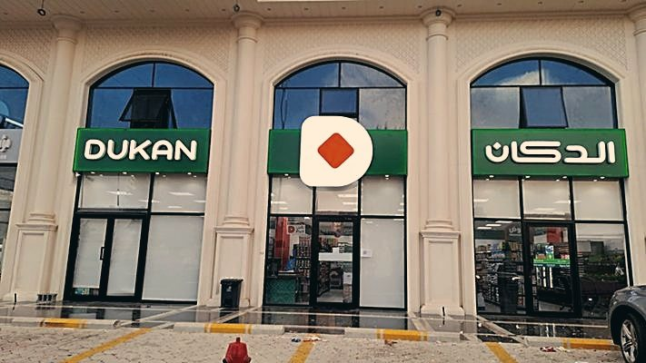
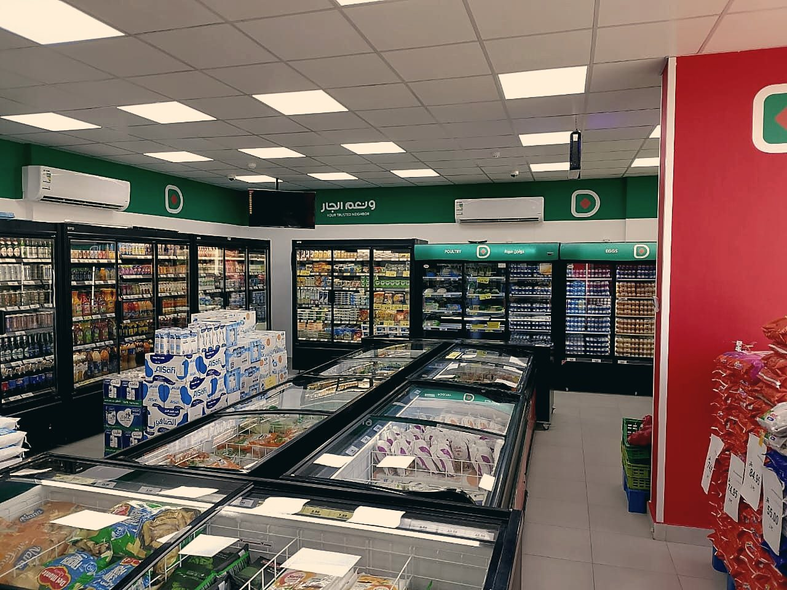

to
PRESENT
Dukan Retailing Company
January 2025 – Present. I lead facilities expansion, construction/fit-out delivery, and maintenance operations across 170+ live, operating retail sites in Jeddah, Makkah, Madinah, Taif, and Yanbu. I report directly to the CEO and lead annual budgeting, resource planning, KPI setting, and performance management for projects and maintenance, leading a 21-person projects and maintenance team spanning a Maintenance Manager, refrigeration, HVAC, electrical, and civil technicians, a Site Engineer, a Designer, and a Coordinator/Document Controller. I manage an annual project portfolio of approximately SR 38M, with up to eight projects running concurrently. I standardized construction delivery through fixed-price contractor framework agreements, pre-agreeing scopes, commercial terms, and contractor readiness ahead of each fiscal year, cutting cost variance by roughly 8% and eliminating the previous five-day procurement cycle. I directly manage six external maintenance contractors and service providers, recruit site engineers, project coordinators, and technicians, and restructure teams for coverage, compliance, and performance. I also delivered a 16,000 sqm distribution center renovation on time and within budget, and designed and built a custom CAFM platform myself using AI-assisted development, despite having no formal coding background, that lifted preventive-maintenance compliance from 85% to 99%, cut average work-order closure time from four days to two, and raised overall maintenance performance from 80% to 85% and climbing. In FY25 I delivered 29 new store openings at 97% on-schedule delivery and 9% savings against the overall budget.
Right now that means actively running a live AC & refrigeration preventive-maintenance cycle across 170+ stores and the distribution center (91 in Jeddah, 42 in Makkah, 22 in Madinah, 12 in Taif, 7 in Yanbu), alongside municipal (Baladiya) compliance tracking across the whole portfolio.
I managed the full retail project lifecycle across multiple sites and cities, site receiving, budget approvals, documentation, tendering, contractor selection, execution, handover, and closeout, reporting to the VP of Projects & Development and managing an SR 30M+ annual expansion budget across the western region. I delivered 52 new store openings in FY24, achieving 96% on-schedule delivery and 9% savings against the overall budget, while cutting fit-out duration by more than half, from 25 days down to 12, and standardizing store look and feel, quality, handover, and readiness.











